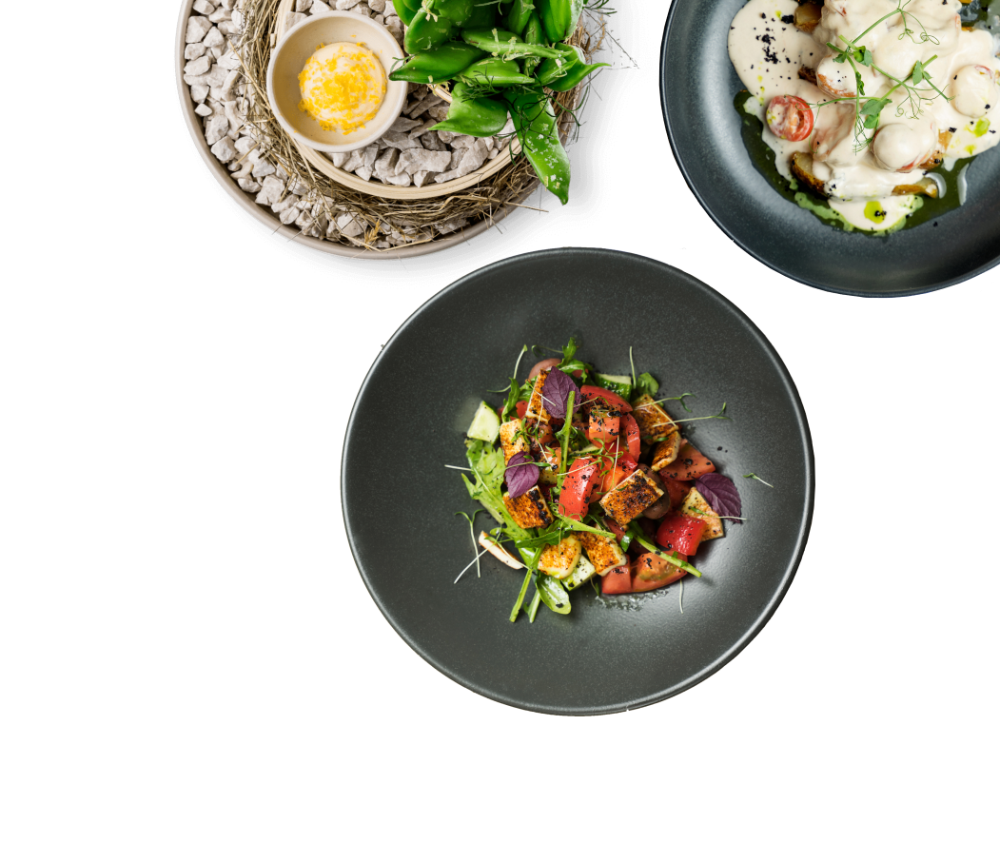

ГАСТРО - БИСТРО
Сочетающее в себе фьюжн израильской, европейской и азиатской кухни, в уютном лофт пространстве, где Вас всегда ждут на завтрак, сытный обед или легкий ужин. А так же площадка с безграничными возможностями в организации камерных мероприятий и семейных застолий!

Если цель не еда, то что?
Шеф-повар
Сергей Громов
Известный многим по проектам «Caviar Bar TSUM» и «Ketch Up». Теперь приглашает Вас попробовать наше осеннее меню, которое идеально подойдет для любителей совмещать традиционные блюда различных кухонь мира